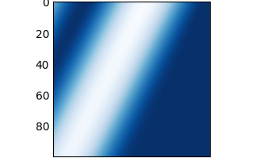
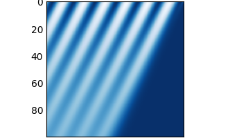
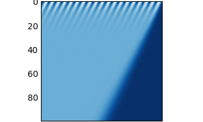

I will try to explain, how computer simulations of fluids, and potentially many other phenomena, physical or not, can develop diffusive properties, that are not actually seen in the real world that the simulation is trying to represent. It is an artifact of how we choose to represent reality and continuous equations in a machine that performs discrete operations.
Why am I writing this?
I tried to write a very simple simulation of basic advection in fluids and ran into an intriguing result. The journey took me through general programming, numerical analysis, fluid mechanics, differential equations and visualization of the results. The information I present here is not new, but it is scatered among many sources and I will try to present a unified view, and hopefully inspire you as much as it inspired me.
By diffusion in numerical diffusion I mean a slow spread of a concentrated quantity into its suroundings with the passage of time. What the quantity actually represents is not that important - it could be a dye in a tank of water, heat in a room, or something else.
How to read this?
Read it sequentially until you feel like there is too much information and then skip over to the Experiment section for a practical exercise.
There are two main ways of looking at fluids - either the microscopic view as a bunch of individual particles, or the macroscopic view of vector and scalar fields. The fields in fluid equations normally represent velocity, and pressure at each point in space that the fluid occupies.
In fluid simulations on computers it is typical to use the macroscopic view of the fields, and use a uniformly subdivided finite grid for the discretization. Basically an N-dimensional array.
In our example, we will assume we live in a 1-dimensional reality (a line) and discretize our grid as a simple array of floating point numbers. We will actually use two grids - one will represent the quantity we are advecting (for example, concentration of a dye at each point in space), and the second one will represent the velocity of the fluid at the same points. Positive values in the velocity field represent movement to the right, and negative values represent movement to the left.
Advection is the transport of a quantity through a medium by the motion of the medium itself. That medium is called a fluid (gas or liquid).
Think of a ball drifting in a lake and how it is transported by the motion of the water in the lake. It is being advected by the water, and the speed of the ball is controled by the velocity of the water at the point, where the ball is. Or at the microscopic level - the momentum of the individual water particles bumping against the surface of the ball.
We will deal with 1-D advection equation, or alternatively called the Burgers' equation without the dissipative term.
$$df/dt + u * df/dx = 0$$
f represents the quantity we are advecting (our dye in the water, or heat
in the room), and u is the velocity field.
For positive values of u, this represents movement of f with the passage
of time to the right, and negative values of u represents movement to the left.
One way of understanding the differential equation is to assume u is constant
and positive, take any function f(z) and use variable substitution
z = x - u * t. z is essentially just constantly decreasing at the speed of
u from whatever initial value x had. The values of f(z) are being taken
from further away on the left as time passes. This gives the illusion that the
whole function f is moving to the right.
Plugging it into the differential equation, we get.
$$ df(z) / dt + u * d(z) / dx = (df(z) / dz) * (dz / dt) + u * (df(z) / dz) * (dz / dx) = df(z) / dz * (x - u * t) / dt + u * df(z) /dz * (x - u * t) / dx = df(z) / dz * (-u) + u * df(z) / dz = 0 $$
It checks out - any function that just drifts to the right is a valid
solution to the advection equation with constant positive field u.
We assumed u is constant, but it might not be. In that case, some of the
quantities of f(x) are shifting to the right, some are shifting to the left
and it all depends on the velocity field u. This potentially leads to the
development of large crests that are called discontinuities, or shock waves.
Analytical differential equations are nice, and you can find analytical
continuous solutions for f that depend on time for a variety of idealized
velocity fields u, but we want to discretize the fields f and u to a grid.
This allows dealing with a lot wider variety of fields that are not
mathematically ideal by approximating them as an array of values.
To reframe the original advection equantion, we can say:
$$df/dt = -u * df/dx$$
This says that the change of f with time is equal to the velocity field
u and the horizontal change in f itself at a fixed point in time.
If we discretize time as well into $$\delta{t}$$ steps, we can say that:
$$f{t+\delta{t}} = f{t} + (-u * df/dx) * \delta{t}$$
So how do we find $$df/dx$$?
This is where the numerical diffusion kicks in.
The simplest option is to just look at the difference of nearby values of the
discretized field f. The first-order upwind scheme just looks at the value
to the left, or to the right, depending on which direction we are advecting in
(the value of u at that point). If u is positive, and the "dye" is
travelling to the right because of u, the left side is called the upwind
side, and vice versa.
The equations are then:
$$df/dx{i} = (f{i} - f{i-1})/\delta{x}$$ if $$ui > 0$$ $$df/dx{i} = (f{i+1} - f{i})/\delta{x}$$ if $$ui < 0$$
Or in compact form:
$$ u^{+}i = max(0, ui) u^{-}i = min(0, ui) df/dx{i} = ((f{i} - f{i-1})/\delta{x}) * u^{+}i + ((f{i+1} - f{i})\delta{x}) * u^{-}_i $$
We would like to know, how good our approximation for df/dx is.
Modified Wave Number Analysis an amazing method that can express, how
accurate the discrete differentiation scheme is, and allows comparing different
schemes. I will give a high-level overview of how it works, but for the details
I advise looking at [2].
Basically, any function f(x) can be expressed as a sum of sine and cosine
functions of different frequencies. This decomposition is called the Fourier
Series and you can use the Fourier Transform to figure out, how much of each
frequency to combine to get the original f(x), expressed in coefficients
c_k. The integer k represents the frequency. The higher the value of
k, the higher the frequency of the sine and cosine functions.
The Modified Wave Number Analysis takes the analytical, perfect derivative
of the Fourier Series of f and compares, how much our approximate difference
scheme drifts from the idealized derivative df(x)/dx by looking at each
coefficient c_k individually.
An interesting result is that not all c_k drift equally - coefficients for
higher frequencies (higher values of k) drift more. That means that features
of f(x) that have big gradients will get more inaccurate than slowly changing
features. And that is exactly what we will see in our experiment.
Below is the full code for 1-D advection using the upwind scheme. You can play
around with the quantity we are advecting, represented by f, and the velocity
of advection at each grid point, represented by u. But the examples are just
different frequencies of a pure sinusoid with 0 on the left boundary and 1
on the right boundary. The velocity is constant throughout the whole domain.
import math
import matplotlib.pyplot as plt
import numpy
def advect(f, u, dt, dx):
"""
First-order upwind scheme.
Arguments:
x - 1D scalar field to advect.
u - 1D velocity field.
dt - time delta.
dx - length of a single grid cell.
"""
u_positive = numpy.minimum(u / dx, numpy.zeros(len(u)))
u_negative = numpy.maximum(u / dx, numpy.zeros(len(u)))
positive_diff = numpy.diff(f, append=1)
negative_diff = numpy.diff(f, prepend=0)
return f - dt * (u_positive * positive_diff + u_negative * negative_diff)
length = 100 # m
max_speed = 5 # m/s
subdivision = 100 # unitless
dt = 0.1 # s
dx = length / subdivision # m
iterations = 100
frequency = 8
f = numpy.array([math.sin(frequency * x / length) for x in range(subdivision + 1)])
u = numpy.array([-max_speed] * (subdivision + 1))
history = []
for i in range(iterations):
history.append(numpy.array(f))
f = advect(f, u, dt, dx)
plt.style.use('_mpl-gallery-nogrid')
fig, ax = plt.subplots()
ax.imshow(history)
plt.show()
Here are the four plots for frequency values of 8, 40 and 120.
  
You can see that the lower the frequency, the less diffusion is happening, which is in line with the results of Modified Wave Number analysis. At 8 the diffusion is barely noticeable, but at 120 it's almost immediate.
While theoretically for a uniform velocity field u we could build a more
exact simulation by choosing the perfect value for dx and dt that would
allow simulating by simply shifting the indexes, the upwind scheme allows us
to plug in any velocity field u.
Feel free to play around with fields f and u by initializing them to
different values. The code depends only on numpy and matplotlib packages.
If you plug in a non-constant field u, the solution should theoretically
develop discontinuities, or shock waves. See [4] for some nice results.
Philosophically, I like to think that the results show that the future is fuzzier the further you want to look. Eventually it's just a blur and completely unpredictable.